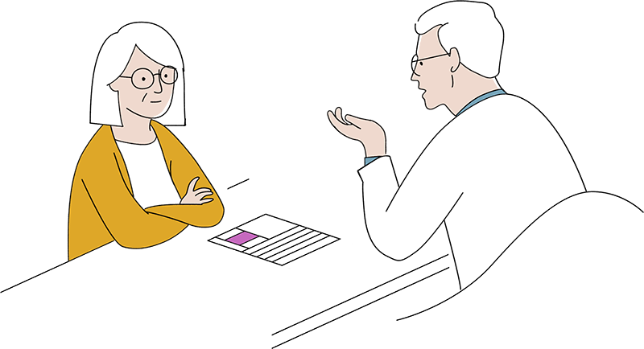

MÓDULO 2 : ENFERMEDAD INVASIVA LOCALIZADA / LOCALMENTE AVANZADA
CASO CLÍNICO 3
1
Se atiende en consulta a una paciente de 49 años (premenopáusica), diagnosticada de carcinoma de mama ductal infiltrante (RE 95%, RP 90%, HER-2 negativo, Ki-67: 15% grado 2). Se realiza cirugía conservadora, BSGC. El resultado anatomopatológico describe una lesión de 23mm, 2 ganglios centinelas negativos (estadio pT2 pN0). Nos planteamos que tratamiento adyuvante sería el más adecuado.
Ficha clínica : |
|
Nombre |
María |
Edad |
49 años |
Tipo de neoplasia |
Carcinoma ductal infiltrante gr 2, RE y RP positivos, HER-2 negativo, ki-67 15% |
Motivos de consulta |
La paciente acude a consulta tras cirugía para valorar tratamiento adyuvante |